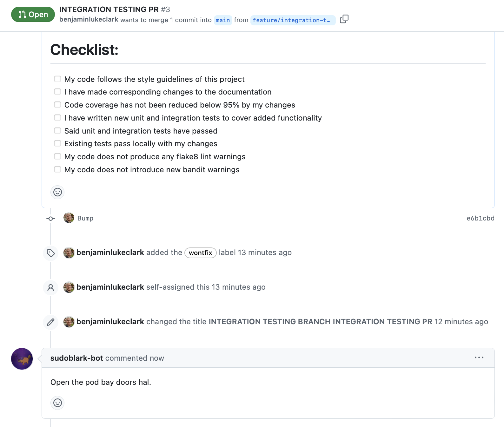
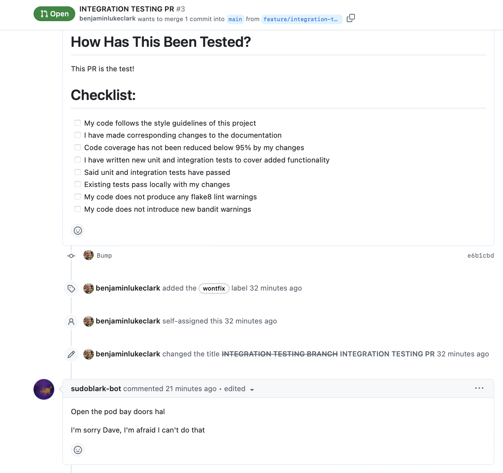
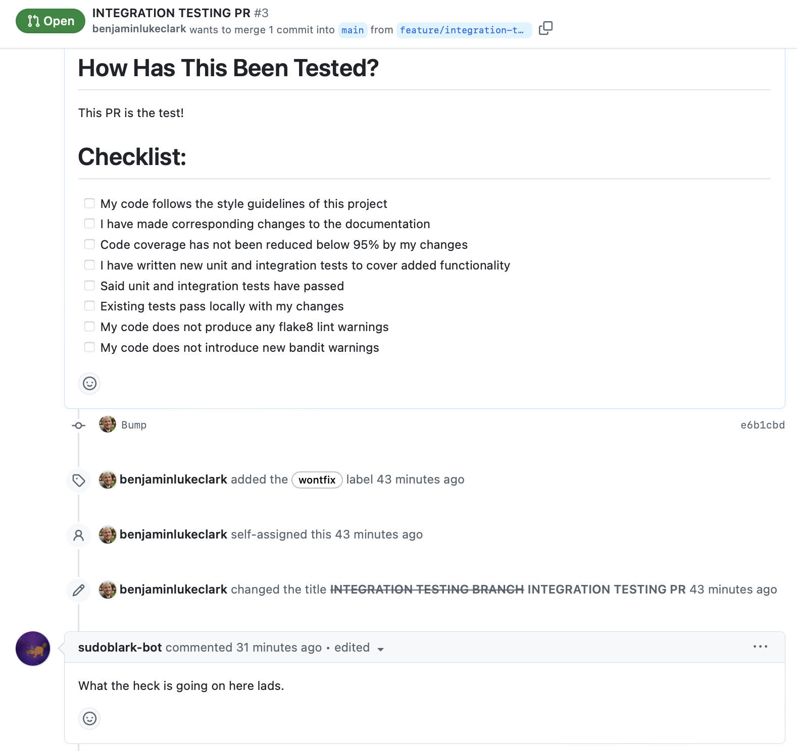

GitHubClient useful examples
Once a GITHUB_TOKEN is present in your environment variables, the below
examples should work just fine.
For more information on why this is required, and how to generate such a token, see GitHubClient documentation.
Repositories
Get all repositories in an organisation
from sudoblark_python_core import GitHubClient
client = GitHubClient()
for repository in client.get_organisation("sudoblark").get_repositories():
print(repository)
Get a personal repository:
from sudoblark_python_core import GitHubClient
client = GitHubClient()
print(client.get_repository("benjaminlukeclark", "Get-Duplicate-Files"))
Get a repository in an organisation
- Either traverse via the Organisation instance:
from sudoblark_python_core import GitHubClient
client = GitHubClient()
organisation = client.get_organisation("sudoblark")
print(organisation.get_repository("sudoblark.terraform.github"))
- Or simply query the base client with the Organisation as the owner:
from sudoblark_python_core import GitHubClient
client = GitHubClient()
print(client.get_repository("sudoblark", "sudoblark.terraform.github"))
Pull Requests
Get all pull requests for a given repository
from sudoblark_python_core import GitHubClient
client = GitHubClient()
repository = client.get_repository("sudoblark", "sudoblark.terraform.github")
for request in repository.get_pull_requests("all"):
print(request)
Comments
Get all comments on a given pull request
from sudoblark_python_core import GitHubClient
client = GitHubClient()
pull_request = client.get_repository("vexx32", "PSKoans").get_pull_request(241)
for comment in pull_request.get_comments():
print(comment)
Post a comment on a given pull request
from sudoblark_python_core import GitHubClient
client = GitHubClient()
pull_request = client.get_repository("sudoblark", "sudoblark.python.core").get_pull_request(3)
body = "Open the pod bay doors hal."
pull_request.post_comment(body)

Update the last comment from a given user
from sudoblark_python_core import GitHubClient
client = GitHubClient()
pull_request = client.get_repository("sudoblark", "sudoblark.python.core").get_pull_request(3)
comments = pull_request.get_comments()
found = False
new_body = "\n\nI'm sorry Dave, I'm afraid I can't do that"
intended_author = "sudoblark-bot"
while not found and len(comments) > 0:
comment = comments.pop()
if comment.author == intended_author:
comment.update(new_body)
found = True

Overwrite the last comment from a given user
from sudoblark_python_core import GitHubClient
client = GitHubClient()
pull_request = client.get_repository("sudoblark", "sudoblark.python.core").get_pull_request(3)
comments = pull_request.get_comments()
found = False
new_body = "What the heck is going on here lads"
intended_author = "sudoblark-bot"
while not found and len(comments) > 0:
comment = comments.pop()
if comment.author == intended_author:
comment.overwrite(new_body)
found = True

Delete the last comment from a given user
from sudoblark_python_core import GitHubClient
client = GitHubClient()
pull_request = client.get_repository("sudoblark", "sudoblark.python.core").get_pull_request(3)
comments = pull_request.get_comments()
found = False
new_body = "What the heck is going on here lads"
intended_author = "sudoblark-bot"
while not found and len(comments) > 0:
comment = comments.pop()
if comment.author == intended_author:
comment.delete()
found = True
Interaction with pull requests within a CI/CD environment
Given the intended operation within CI/CD environments, there are some examples below for how to use these classes to interact with pull requests in the simplest manner possible.
This all follow two assumptions:
GITHUB_TOKENis an environment variable available to the agent running the job./file.mdis present, and contains the markdown we wish to utilise for the comment
NOTE: As an Organisation is listed as the owner of a repository, these example will work both for repositories which are:
- Present on a personal GitHub account
- Stored within an Organisation
All of these examples essentially rely upon the fact that most CI/CD systems out there prepopulate information in the build with contextual information. Said contextual information can be used to discover the pull request associated with the build with relative ease. The docs regarding what values are prepopulated, and how, have been linked below for reference.
| Platform | Docs | Syntax |
|---|---|---|
| GitHub Actions | docs | Grab via environment variables |
| Azure DevOps pipelines | docs | Reference via "$(VAR_NAME)" directly in script, or add to the env block of you task to reference via an environment variable |
| CircleCI | docs | Reference via environment variables |
Adding a new comment
GitHub Actions
import os
from sudoblark_python_core import GitHubClient
REPO_OWNER: str = os.getenv("GITHUB_REPOSITORY_OWNER")
REPO_NAME: str = os.getenv("GITHUB_REPOSITORY").split("/")[-1]
PULL_REQUEST_ID: int = int(os.getenv("GITHUB_REF_NAME").split("/")[0])
client = GitHubClient()
repository = client.get_repository(REPO_OWNER, REPO_NAME)
pull_request = repository.get_pull_request(PULL_REQUEST_ID)
with open("./file.md", "r") as file:
content = file.read()
pull_request.post_comment(content)
Azure DevOps pipelines
from sudoblark_python_core import GitHubClient
REPO_OWNER: str = "$(Build.Repository.Name)".split("/")[0]
REPO_NAME: str = "$(Build.Repository.Name)".split("/")[-1]
PULL_REQUEST_ID: int = int("$(System.PullRequest.PullRequestNumber)")
client = GitHubClient()
repository = client.get_repository(REPO_OWNER, REPO_NAME)
pull_request = repository.get_pull_request(PULL_REQUEST_ID)
with open("./file.md", "r") as file:
content = file.read()
pull_request.post_comment(content)
CircleCI
import os
from sudoblark_python_core import GitHubClient
REPO_OWNER: str = os.getenv("CIRCLE_PR_REPONAME").split("/")[0]
REPO_NAME: str = os.getenv("CIRCLE_PR_REPONAME").split("/")[-1]
PULL_REQUEST_ID: int = int(os.getenv("CIRCLE_PR_NUMBER").split("/")[0])
client = GitHubClient()
repository = client.get_repository(REPO_OWNER, REPO_NAME)
pull_request = repository.get_pull_request(PULL_REQUEST_ID)
with open("./file.md", "r") as file:
content = file.read()
pull_request.post_comment(content)